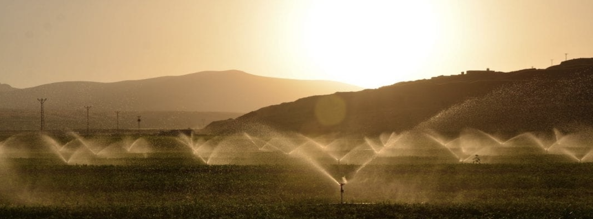

Professional Bio
Meagan graduated with a degree in Environmental Data Science in June of 2023. She aims to use her passion for environmental justice and data science skills to make a difference in achieving clean, equitable, and affordable water access to all. She loves visualizing and solving problems using R, Python, and geographic information system software. She is especially interested in California’s water resources, but open to other opportunities.
Meagan gained skills in research, coding, and ArcGIS Pro during her undergraduate education. After graduating from UC Santa Barbara in 2021, she co-authored a paper with The Nature Conservancy looking at equity in California’s Sustainable Groundwater Management Act. Additionally, she independently developed an interactive dashboard and survey using ArcGIS Online tools for the City of Santa Barbara’s Sustainability & Resilience department, and was a water policy intern for the Public Policy Institute of California (PPIC). She is now working as an Environmental Data Scientist with Pathways Climate Institute.
Education
Master of Environmental Data Science (MEDS) | 2023
Bachelor of Science in Environmental Studies | 2021
Emphasis: Geographic Information Systems
Highlighted Projects
Title: Assessing Wildfire in Groundwater Dependent Ecosystems
Role: Project & Data Manager
Reproducible Code: Analysis, Dashboard
Description: We developed a ShinyApp Dashboard in R to show wildfire statistics and trends within groundwater dependent ecosystems (GDEs) in California. The final product is a single operating platform where you can click on any groundwater dependent ecosystem in California and view wildfire statistics for that particular ecosystem.
Title: CleanSB Summary Dashboard
Role: Dashboard Developer
Description: I independently developed a dashboard for the City of Santa Barbara Sustainability & Resilience Department to show city clean up efforts over time. Created with ESRI ArcGIS Products (ArcGIS Online).